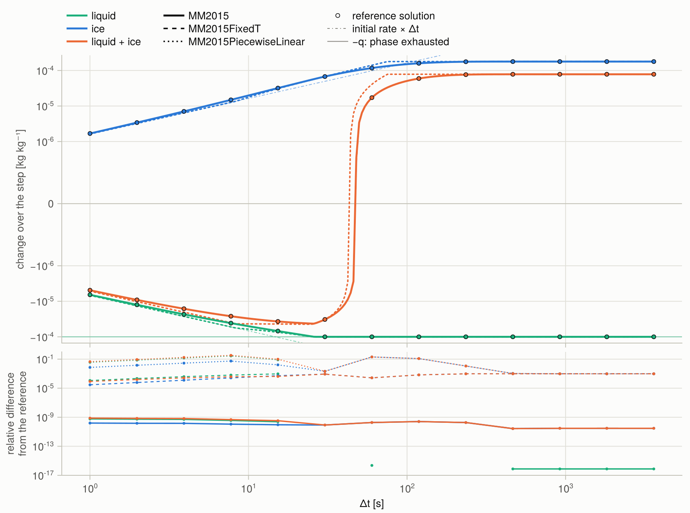
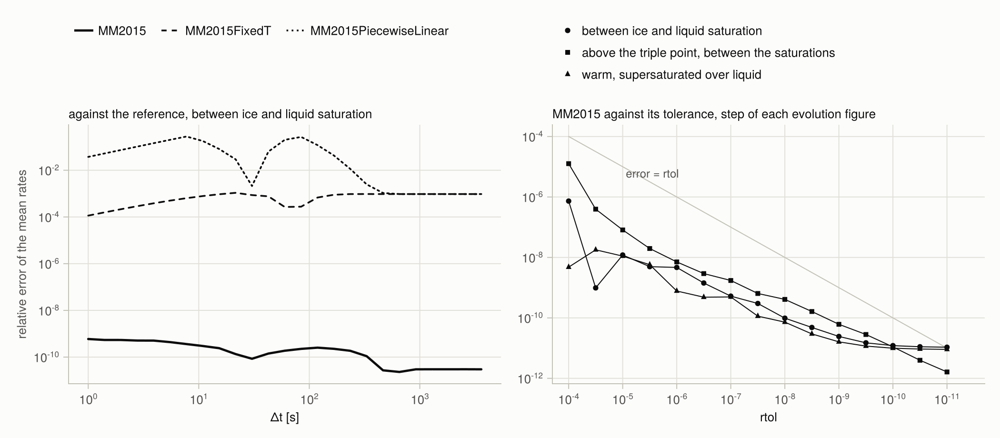
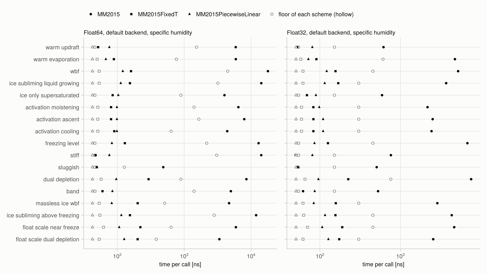

MorrisonMilbrandt2015.jl
Condensation, evaporation, deposition, and sublimation of a homogeneous air parcel over a model time step, after Appendix C of Morrison & Milbrandt (2015). Given the parcel's temperature, pressure, humidities, the relaxation times of its liquid and ice, and the external forcing, the package returns the mean phase-change rates of liquid and ice over the step, with the Wegener–Bergeron–Findeisen exchange between them, the exhaustion of either phase, and activation from clear air.
| Scheme | Temperature | Work per call | Page |
|---|---|---|---|
MM2015PiecewiseLinear | coefficients frozen at the step start; rates frozen per segment | arithmetic per segment, at most 14 segments | MM2015PiecewiseLinear |
MM2015FixedT | coefficients frozen at the step start; the exact solution of Appendix C | one expm1 per segment and a closed-form root per exhaustion, at most 9 segments | MM2015FixedT |
MM2015 | evolves; the parcel model solved to a tolerance | integrator steps, fewer at a looser tolerance | MM2015 |
Every call is free of allocations. Performance has the measured times and what they scale with.
Quick start
julia> using MorrisonMilbrandt2015
julia> problem = MM2015Problem(
SpecificHumidity(),
DefaultThermodynamicsBackend(),
MM2015State(261.0, 8.0e4, 2.07e-3, 2.0e-4, 1.0e-4), # T [K], p [Pa], q_t, q_l, q_i [kg kg⁻¹]
MM2015Timescales(8.0, 60.0), # τ_liq, τ_ice [s]
MM2015Forcing(-5.0, 0.0, 0.0), # dp/dt [Pa s⁻¹], dT/dt [K s⁻¹], dq_v/dt [s⁻¹]
);
julia> validate(problem, 300.0)
julia> round.(tendencies(MM2015FixedT(), problem, 300.0); sigdigits = 3)
(-6.67e-7, 1.2e-6)
julia> round.(tendencies(MM2015(), problem, 300.0); sigdigits = 3)
(-6.67e-7, 1.21e-6)The parcel sits between ice and liquid saturation at 261 K and rises at about 0.5 m s⁻¹. Its liquid evaporates onto the ice and is exhausted after about 76 s, so the mean liquid rate over 300 s is $-q_l/\Delta t$. trajectory returns the same step with its segments or integrator steps recorded, and plot_evolution draws it after using CairoMakie.
The moisture variables follow the basis of the problem: SpecificHumidity (per unit mass of moist air) or DryAirMixingRatio (per unit mass of dry air), and so do the returned rates. The thermodynamics come from DefaultThermodynamicsBackend or, after using Thermodynamics, from a Thermodynamics.Parameters.ThermodynamicsParameters set.
What the schemes do

Change of liquid, ice, and their sum over one step against the step, for a parcel at 261 K between ice and liquid saturation: the liquid evaporates onto the ice and is exhausted after 26 s, after which its change is $-q_l$. Dots are a reference solution of the parcel model; the lower panel is the difference of each scheme from it. plot_step_change draws this figure. Five regimes, latent heating, and forcing are in the Gallery.

Left: relative error of the mean rates of each scheme against a Radau IIA solution of the parcel model, as a function of the step, for the same state. MM2015 stays below $10^{-9}$; MM2015FixedT differs by $10^{-4}$ to $10^{-3}$ and MM2015PiecewiseLinear by up to 0.28. Right: the error of MM2015 falls with its relative tolerance and stays below it. More in Validation.

Time per call of each scheme on each test state, and the floor set by the transcendental functions the call must evaluate (Performance).
Reference
Morrison, H., and J. A. Milbrandt, 2015: Parameterization of cloud microphysics based on the prediction of bulk ice particle properties. Part I: Scheme description and idealized tests. J. Atmos. Sci., 72, 287–311, doi:10.1175/JAS-D-14-0065.1.